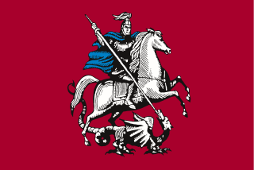
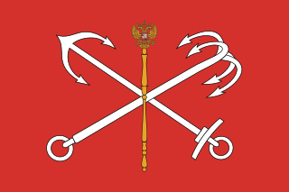
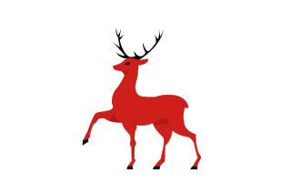
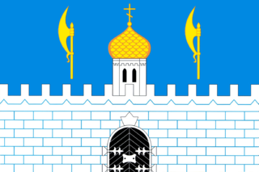
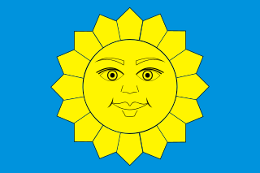
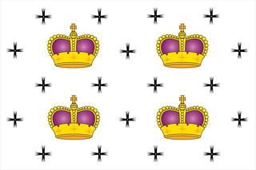

| Город | Кол. жителей | Площадь | Мэр | |
|---|---|---|---|---|
|  | Москва | 12,6M | 2511 km² | Сергей Собъянин |
|  | Санкт-Петербург | 4,9M | 1439 km² | Александр Беглов |
|  | Нижний Новгород | 1,2M | 410 km² | Юрий Шалабаев |
|  | Сергиев-Посад | 98,784 | 50 km² | Михаил Токарев |
|  | Истра | 33,558 | 7 km² | Татьяна Витушева |
|  | Дмитров | 68,397 | 26 km² | Илья Поночевный |